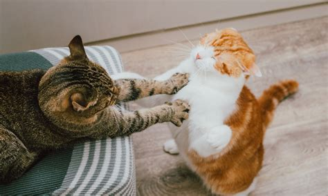
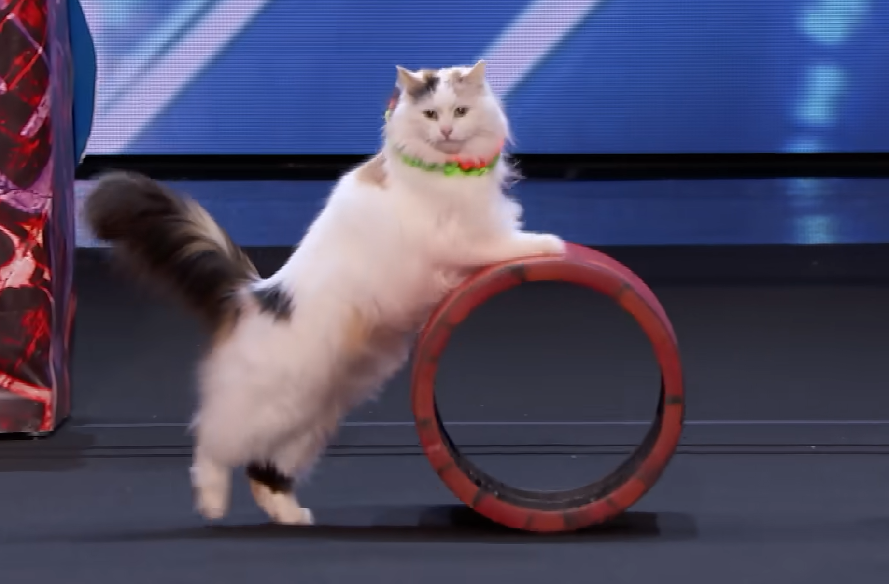
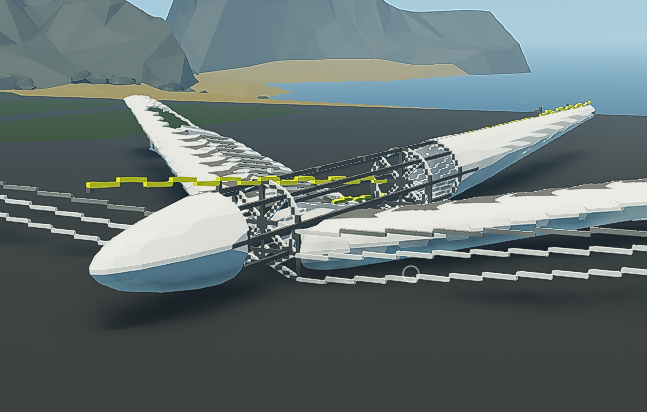
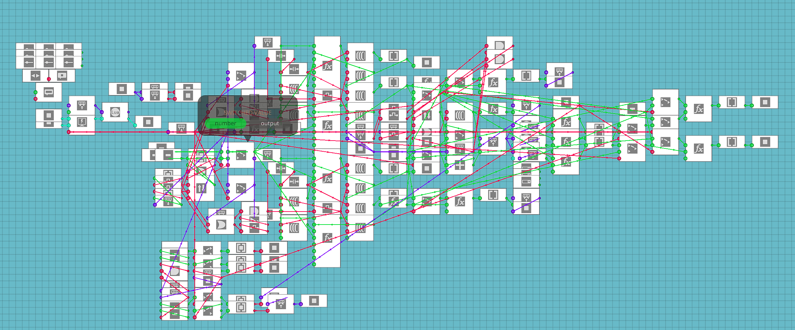
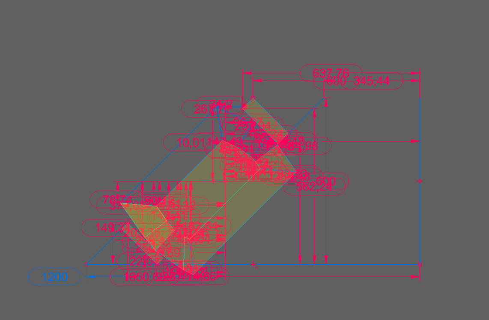
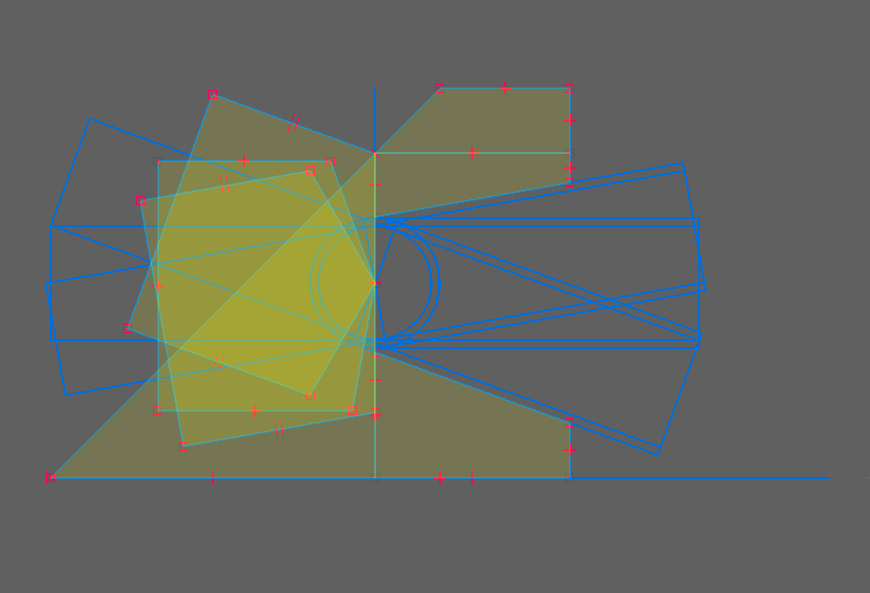
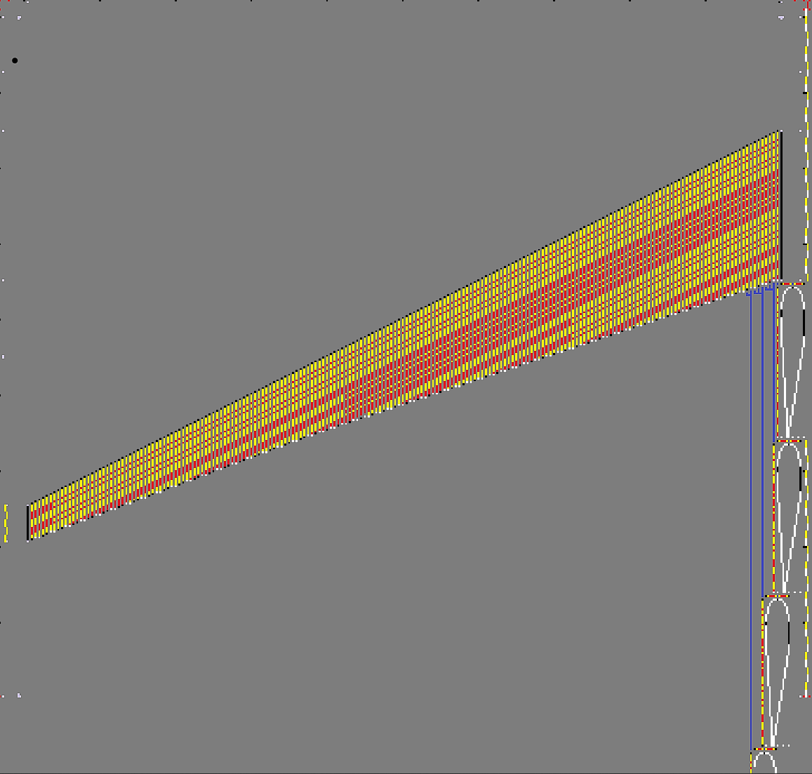
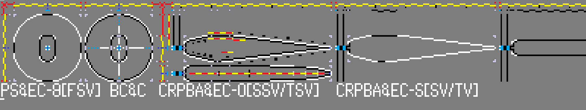

Introducing Them
Cats are a species heavily invested in sleeping, eating and playing.
And may prefer smaller closed in spaces.
Branched workflow · Direct design · Creative Thinking
I've created detailed grounded models and systems at my personal leisure which follow real design principles, and which could be translated to real designs through CAD workflow.
Truly focused in the utmost sense akin to how a architect spurs the civil engineer, hopefully to one day switch roles and become a true engineer
Profile snapshot
This is what you can expect from the best of a feline's mind.

Cats are a species heavily invested in sleeping, eating and playing.
And may prefer smaller closed in spaces.
Pathway cats developing these interests and beyond for more advance acrobatics

Cats are capable of trained skills, although to a lesser extent in comparison to dogs due to shorter history of domestication.
Portfolio
Many various filler examples of certain projects. denoting some skill in an abstract measure.

A grounded 3d plane model derived from real word sources and examples

block code made of high purity boolean and integer components.

CAD section of a large body pivot and measurements.

Secondary modelling of 'CAD example' demonstrating branchout in relation to design.

Modelling of section by section length and design of aerofoil structure along swept tapering wing.

Inverse demonstration of standard creative workflow, in which the model was created prior to blueprint.

Project description.
Interactive content
Previously learned Bootstrap components can remain useful in a more developed portfolio.
Slideshow
A look into the depths of the creative workflow
Contact
This form is not utilised, this is due to the fact that a form would have no value to a cat in the first place.
In your portfolio, use appropriate professional contact details.